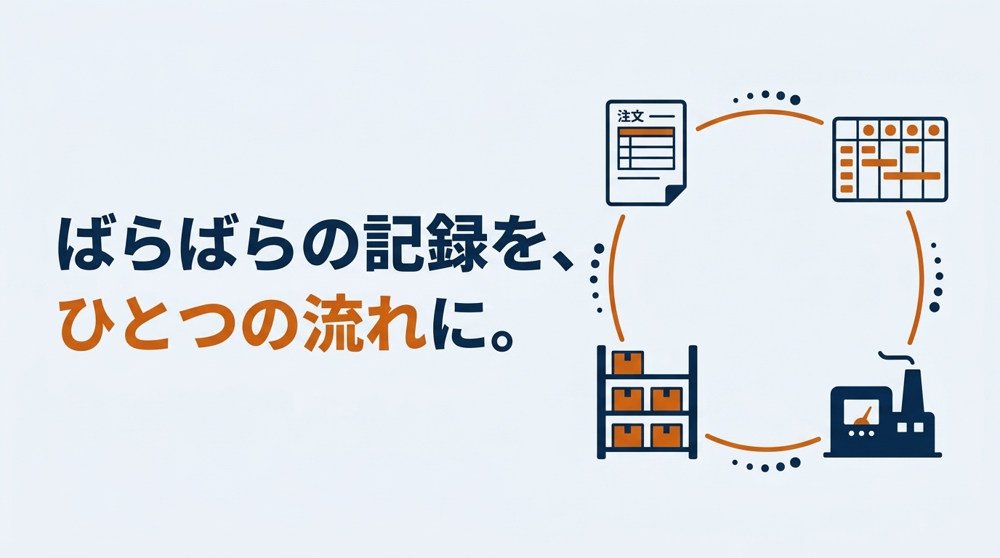
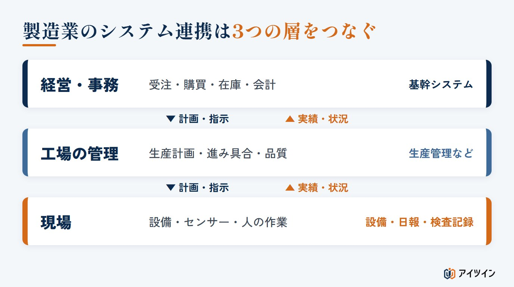
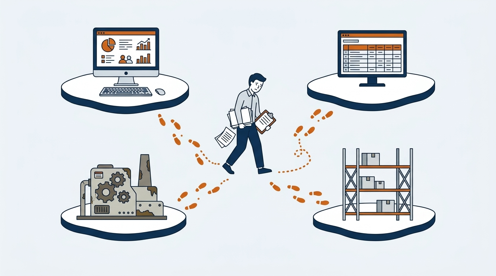
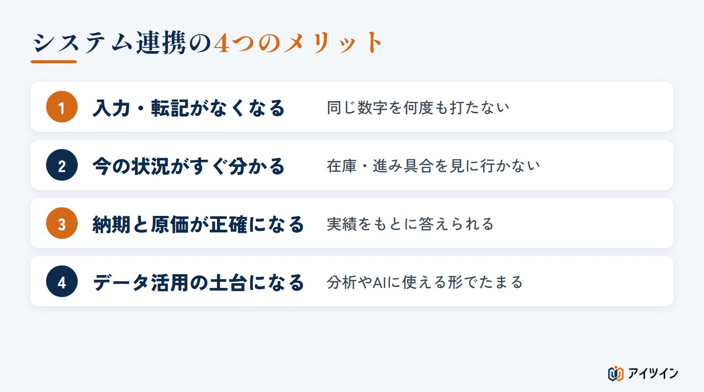
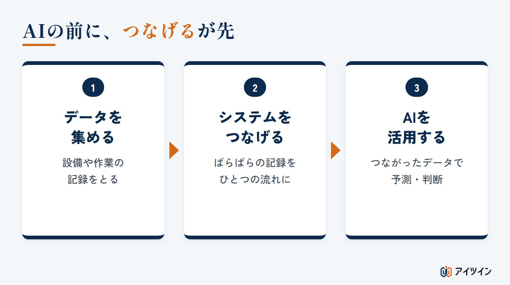
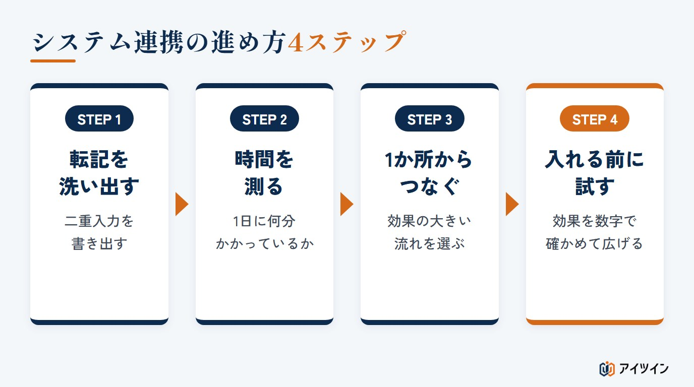
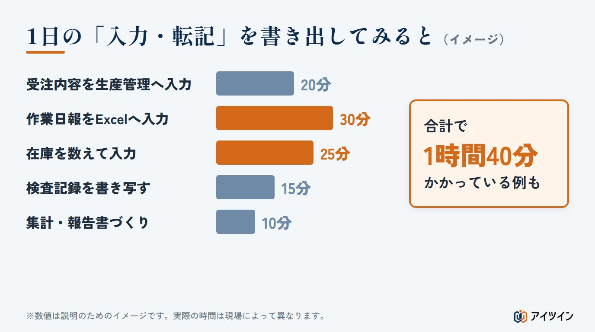
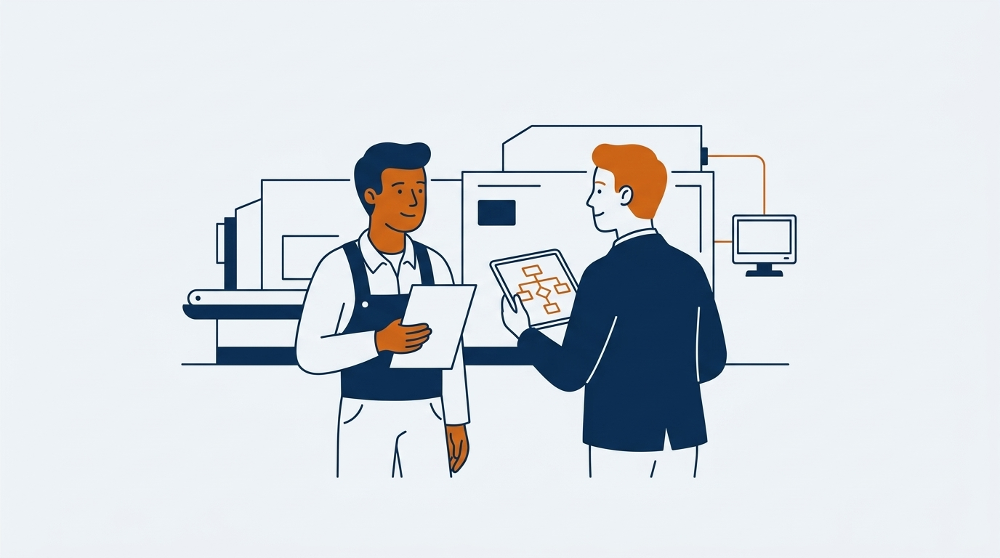

「同じ数字を、受注の画面にも、生産の表にも、在庫の表にも打ち込んでいる」「在庫が今いくつあるのか、倉庫まで見に行かないと分からない」。こうした手間の多くは、社内の仕組みどうしがつながっていないことから生まれています。
本記事では、製造業のシステム連携とは何かを整理したうえで、つながらない理由、メリット、連携の方法、つまずきやすい点、そして進め方を解説します。後半では、「AIを入れたい」と考えたときに、なぜ先にシステム連携が必要になるのか、中小の製造現場ではどこから始めればよいのかもご紹介します。
この記事でわかること
- 製造業のシステム連携の全体像と、つながらない4つの理由
- システム連携の4つのメリット、3つの方法、4つの課題
- AIの前に連携が必要な理由と、中小製造業の進め方4ステップ
製造業のシステム連携とは
はじめに、システム連携という言葉が何を指すのか、製造業では何と何をつなぐのかを整理します。
ばらばらの仕組みを、ひとつの流れにすること
システム連携とは、別々に動いているシステムや設備のあいだで、データが自動で受け渡されるようにすることです。英語ではシステムインテグレーション（System Integration）と呼ばれ、略して「SI」と書かれることもあります。設備の自動化を請け負う会社を「SIer（エスアイヤー）」と呼びますが、そのSIも同じ言葉です。
たとえば、受注の内容が自動で生産の計画に反映される。現場で入力した実績が、そのまま在庫や原価の計算に使われる。人が打ち直したり、書き写したりしなくても、情報が次の工程へ流れていく状態をつくるのが、システム連携の目的です。
製造業でつなぐのは「経営・事務」「工場の管理」「現場」の3つの層
製造業の情報は、大きく3つの層に分けて考えると整理しやすくなります。

| 層 | 主な仕組み |
|---|---|
| 経営・事務 | 統合基幹業務システム（ERP）、販売管理、会計ソフト |
| 工場の管理 | 生産管理システム、製造実行システム（MES） |
| 現場 | 設備・センサー、作業日報、検査記録 |
上の層から下の層へは「何を、いつまでに、いくつ作るか」という計画と指示が流れます。下の層から上の層へは「実際にいくつできたか、どれだけ時間がかかったか」という実績が戻ります。この上下の流れが途切れずにつながっていることが、システム連携ができている状態です。
「経営の数字」と「現場の動き」は、時間の細かさが違う
つなぐときに知っておきたいのが、層によって扱う時間の細かさが違うことです。経営や事務では、日や月の単位でまとめた数字を見ることが多くあります。一方、現場の設備は、秒やそれより短い単位で動いています。受注や在庫のように、経営・事務の側でもすぐに反映したい情報もあります。細かさの違う情報をそのまま流し込むと、上の層は情報の量に埋もれ、下の層は必要な指示が届くのが遅れます。「どの情報を、どの細かさで、どのタイミングで渡すか」を決めることが、連携の設計の中心になります。
この章のまとめ
- システム連携とは、データが人の手を介さずに次の工程へ流れる状態をつくること
- 製造業では「経営・事務」「工場の管理」「現場」の3つの層をつなぐ
- 層ごとに時間の細かさが違うため、渡す情報とタイミングを決める必要がある
製造業でシステムがつながらない4つの理由
経済産業省・厚生労働省・文部科学省の「2026年版ものづくり白書」によると、製造プロセスのデータを何らかの目的で取得している事業者は7割弱にのぼります。しかし、取得したデータを活用して効果が得られた事業者は約4割にとどまっています。企業と企業のあいだのデータ連携も、2年前からほとんど進んでいません。データは取れているのに、つながっていない。その背景には、次の4つの理由があります。

理由1：部門ごとに、別々の時期に、別々の仕組みを入れてきた
営業は販売管理、製造は生産管理、経理は会計ソフト。多くの会社では、それぞれの部門が必要になったときに、その部門に合う仕組みを入れてきました。一つひとつは役に立っていても、全体でデータを受け渡すことは最初から想定されていないことがほとんどです。
理由2：工場や拠点ごとに、やり方と仕組みが違う
同じ会社でも、工場が違えば品番の付け方や記録の取り方が異なることがあります。同じ部品に、第一工場と第二工場で別の番号が付いている。こうした違いがあると、仕組みをつないでも、データ同士が同じものを指していると判断できません。
理由3：古い設備からは、データが出てこない
長く使われている設備には、通信の機能がないものも多くあります。動いているか止まっているかさえ、人が見に行かないと分かりません。現場の層からデータが出てこなければ、上の層とつなぎようがない、というのが実情です。その結果、設備の稼働時間や停止の回数は、作業者が紙に書いた記録だけが頼りになります。書きもれや思い違いが混ざるため、あとから集計しても実態とずれてしまいます。
理由4：すき間を、紙とExcelと人の手で埋めている
仕組みと仕組みのあいだは、多くの場合、人が埋めています。受注の内容を見ながら生産の表に打ち込む。紙の日報をExcelに入力する。月末にいくつもの表を集めて集計する。この「つなぎの作業」が当たり前になりすぎて、負担として意識されにくいことも、連携が進まない理由の一つです。
この章のまとめ
- データを取得している事業者は7割弱、効果が得られたのは約4割（2026年版ものづくり白書）
- 部門別・拠点別に仕組みが分かれ、古い設備からはデータが出にくい
- すき間は、紙とExcelと人の手で埋められている
システム連携の4つのメリット

メリット1：入力と転記の手間がなくなる
同じ数字を何度も打ち込む作業がなくなります。打ち間違いや入力もれも減り、その確認にかけていた時間も不要になります。人手が限られる中小の現場ほど、この効果は大きく表れます。入力のためだけに残業していた時間や、月末にまとめて行っていた集計の作業を、本来の仕事に回せるようになります。
メリット2：在庫や進み具合が、その場で分かる
現場の実績がすぐに反映されるため、在庫の数や工程の進み具合を、見に行かなくても確認できるようになります。「あの注文、今どこまで進んでいる？」という問い合わせに、電話や現場への確認なしで答えられます。
メリット3：納期の回答と原価の計算が正確になる
受注、生産、在庫の情報がつながっていれば、今の負荷と在庫をもとに、根拠のある納期を答えられます。実際にかかった時間や材料がそのまま原価の計算に使われるため、「この製品は本当に利益が出ているのか」を、感覚ではなく実績で確かめられるようになります。
メリット4：データ活用やAIの土台になる
つながったデータは、一か所にまとまって、同じ形式でたまっていきます。これは、不良の原因を分析したり、設備の故障を予測したりするための材料になります。この点は、後半の「AIを入れたい、の前に」の章で詳しく説明します。
この章のまとめ
- 入力・転記の手間とミスが減る
- 在庫や進み具合がその場で分かり、納期と原価が正確になる
- つながったデータは、分析やAI活用の土台になる
システム連携の3つの方法
仕組みどうしをつなぐ方法のうち、現場でよく使われる3つを紹介します。どれが優れているということではなく、つなぎたい相手と、求める速さに合わせて選びます。
| 方法 | 向いている場面 |
|---|---|
| ファイルの受け渡し | 1日1回など、決まった時刻にまとめて渡せば足りるとき |
| API連携 | 受注や在庫など、変化をすぐに反映したいとき |
| 連携ツール | つなぐ相手が多く、個別につなぐと管理しきれないとき |
方法1：ファイルの受け渡しでつなぐ
もっとも手軽な方法です。多くの仕組みは、表形式のファイルを出したり読み込んだりする機能を持っています。この出し入れを自動で動かすだけでも、人が打ち直す作業はなくせます。ただし、反映されるのは受け渡しのタイミングごとなので、「今この瞬間」の情報が必要な用途には向きません。
方法2：APIでつなぐ
API（エーピーアイ）とは、ある仕組みが、ほかの仕組みと機能やデータをやり取りするために用意している窓口のことです。受注が入った瞬間に生産側へ伝える、といった即時の連携ができます。相手の仕組みがこの窓口を用意していることが前提で、古い仕組みでは使えないこともあります。
方法3：連携ツールを使ってつなぐ
つなぐ相手が増えてくると、1対1の連携が網の目のように増え、どこを変えるとどこに影響するのか分からなくなります。こうしたときは、あいだに連携専用のツールを置き、受け渡しを一か所で管理する方法が有効です。連携ツールは、ファイルの受け渡しやAPIに代わるものではなく、それらをまとめて動かし、形式の変換などを助ける役割を持ちます。最初から大がかりな基盤を入れる必要はなく、つなぐ数が増えてきた段階で検討すれば十分です。
この章のまとめ
- よく使われるのは「ファイルの受け渡し」「API連携」と、それらをまとめる「連携ツール」
- 求める速さと、つなぐ相手の数で選ぶ
- はじめは手軽な方法から。基盤づくりは、つなぐ数が増えてからでよい
システム連携でつまずきやすい4つの課題
システム連携は、技術よりも手前の部分でつまずくことが多い取り組みです。代表的な4つを挙げます。
課題1：品番やコードがそろっていない
同じ製品を、営業は商品名で、製造は図面番号で、倉庫は棚の番号で呼んでいる。こうした状態では、仕組みをつないでもデータ同士が結びつきません。連携の前に、品番・取引先・工程などの呼び方をそろえる作業が欠かせません。地味ですが、ここが連携の成否をもっとも左右します。すべてを一度にそろえようとすると進まなくなるため、つなぐ予定の範囲から順にそろえていくのが現実的です。
課題2：渡すタイミングと細かさが合っていない
現場のデータをすべて上の層に送ると、量が多すぎて使いこなせません。逆に、1日1回しか渡さないと、急な変更に対応できません。何のために使う情報なのかを先に決め、それに合わせて細かさと頻度を決める必要があります。
課題3：部門ごとに仕事の進め方が違う
営業は受注を早く確定させたい。製造は計画を頻繁に変えられたくない。部門ごとに優先することが違うため、データの入力のしかたや締めのタイミングもそろいません。システムをつなぐことは、部門のあいだの仕事の進め方を見直すことでもあります。
課題4：入れたあとの運用が決まっていない
連携が止まったとき、誰が気づき、誰が直すのか。品番が増えたとき、誰が登録するのか。こうした決まりがないと、いつのまにか元の手入力に戻ってしまいます。仕組みを入れることよりも、使い続けられる形にすることの方が難しい、というのが多くの現場の実感です。担当者を1人に任せきりにせず、止まったときの連絡先と手順を紙1枚にまとめておくだけでも、定着のしやすさは変わります。
この章のまとめ
- 品番やコードの呼び方をそろえることが、最初の関門
- 渡す情報の細かさと頻度は、使い道から決める
- 部門間の進め方と、導入後の運用まで決めておく
「AIを入れたい」の前に、システム連携が先になる理由
ここからは、少し視点を変えます。最近は「AIを導入したい」という声をよく耳にします。しかし製造業、とくに中小の現場では、AIよりも先にシステム連携に取り組んだ方が、早く成果につながります。
AIは「考える技術」、システム連携は「つなげる仕事」
AIは、データを分析して判断や予測を行う技術です。不良品を画像で見分ける、設備の故障を予測する、といったことができます。ただし、AIだけでは何もできません。いわば頭脳だけがある状態で、考えるための材料が届かなければ働けないのです。
一方のシステム連携は、材料であるデータを集め、流れるようにする仕事です。たとえるなら、AIが優秀な作業者だとすれば、システム連携は工場全体のラインの設計にあたります。どれほど優秀な作業者がいても、材料が届かないラインでは力を発揮できません。
よくある勘違い：データがばらばらのまま、AIを入れようとする
実際に現場を見ると、AIを動かすためのデータがばらばらに存在しているケースがとても多くあります。Excelの表、紙の図面、生産管理の仕組み、在庫の仕組み、会計ソフト。これらがすべて別々に置かれています。この状態でAIを入れても、効果は出ません。読み込ませるデータが、そもそもつながっていないからです。
順番は「集める → つなげる → 活用する」
必要な順番は、次の3つです。

まず、設備や作業の記録を集める。次に、ばらばらの記録をひとつの流れにつなげる。そのうえで、AIを活用する。話題になっているのは3番目ですが、中小の製造業で先に価値を生むのは、1番目と2番目です。どれも地味な作業ですが、この積み重ねがなければ、AIを入れても動きません。遠くの大きな話よりも、自社のExcelと生産管理がつながっているかどうか。こちらの方が、差し迫った問題だと考えています。
この章のまとめ
- AIは考える技術、システム連携は材料を届ける仕事
- データがばらばらのままAIを入れても、効果は出ない
- 順番は「集める → つなげる → 活用する」
中小製造業のシステム連携の進め方4ステップ
では、何から始めればよいのでしょうか。大きな仕組みを一度に入れ替えるのではなく、次の4つのステップで小さく進めるのがおすすめです。

STEP1：入力・転記の作業を洗い出す
まず、社内で行われている「打ち直し」「書き写し」「集計」を一つずつ書き出します。受注から出荷までの流れを追いながら、どこで人が情報を運んでいるかを確かめましょう。システムの一覧ではなく、人の作業の一覧をつくるのがポイントです。
STEP2：それぞれに何分かかっているかを測る
次に、洗い出した作業にかかっている時間を測ります。書き出してみると、次の図のように、1日の中でかなりの時間を占めていることがあります。

この例では、入力と転記だけで1日に1時間40分かかっています。月に20日働くとすると、約33時間です。数字にすることで、「どこからつなげば一番効くか」がはっきりします。
STEP3：効果の大きい1か所からつなぐ
時間がかかっている作業、ミスが起きやすい作業から、1か所だけ選んでつなぎます。最初はファイルの受け渡しのような手軽な方法で十分です。たとえば「紙の日報をExcelに打ち直す」作業をなくすだけでも、毎日の負担は目に見えて変わります。1か所でも「打ち直しがなくなった」という実感があると、次に進めるときの現場の協力が得やすくなります。
STEP4：入れる前に試し、効果を確かめてから広げる
つなぐ範囲を広げるときや、新しい仕組みを入れるときは、いきなり本番に入れず、小さく試して効果を確かめます。つなぐ前とあとで、作業時間がどれだけ変わったかを数字で比べましょう。効果が確かめられたら、次の1か所へ広げていきます。
この章のまとめ
- システムではなく、人が行っている入力・転記の作業を洗い出す
- かかっている時間を測り、効果の大きい1か所からつなぐ
- 小さく試して、効果を数字で確かめてから広げる
アイツインのシステム連携の支援
アイツインは、中小製造業のシステム連携を、現場に入り込んで一緒に進める伴走型で支援しています。特定の製品を売ることが目的ではないため、「何をつなぐと現場が楽になるか」から一緒に考えます。

「なくす転記」を一緒に見つける短期プログラム
「どこから手をつければよいか分からない」という段階からご相談いただけます。エンジニアが現場にうかがい、受注から出荷までの情報の流れを追って、人が運んでいる情報を洗い出します。どこに時間がかかっているかを数字で整理する、課題発見の短期プログラムをご用意しています。本格的に進める場合も3か月単位で、成果を確かめながら続けるかどうかをご判断いただけます。
古い設備や紙の記録も、つなげる対象にする
通信の機能がない古い設備でも、配線に手を加えずに、外側から稼働の状況を取り出す方法があります（詳しくは古い設備からデータを取る方法を解説したコラムをご覧ください）。紙の日報や検査記録も、入力の手間を減らしながらデータに変えていきます。「うちは古いから無理」という現場こそ、つなげる効果が大きいと考えています。
つなぐ前に、効果を試して確かめる
現場の作業時間や情報の流れをデータにして、つなぐ前とあとの違いを事前に確かめます。現場をデジタル上で再現し、「作る前に試せる」ので、大きな投資で失敗するリスクを抑えられます。集めてつなげたデータは、その先のAI活用の土台にもなります。
まとめ
本記事では、製造業のシステム連携の全体像と、つながらない理由、メリット、方法、課題、進め方を解説しました。
システム連携というと、大がかりな仕組みの入れ替えを思い浮かべがちです。しかし、中小の製造現場で最初に考えたいのは、「どのシステムを入れるか」ではなく「どの転記をなくすか」です。人が運んでいる情報を洗い出し、効果の大きい1か所からつなげる。その積み重ねが、手間を減らし、判断を速くし、やがてAIを活かせる土台になります。まずは、社内の入力と転記の作業を書き出すところから、始めてみてはいかがでしょうか。
参考
・経済産業省・厚生労働省・文部科学省「2026年版ものづくり白書 概要」（経済産業省）